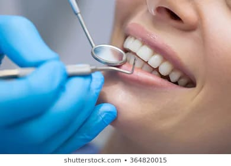
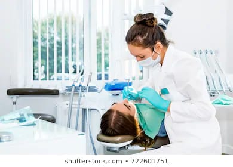
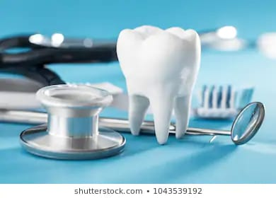

| 24*7 HospitalPassion For Excellence... Compassion For People... | HOME ABOUT SERVICE DOCTORS APPOINTMENT CONTACT US |
|
What We Offer! MEDICAL DRESSAGE
Parametric Monitors And Defibrillator

*Infected *Swollen *Tender *By taking good care of your teeth and gums, you can help prevent problems such as tooth decay (caries) & gum disease (gingivitis or periodontitis). *You should also teach your children how to brush and floss from an early age to help them protect their teeth. Department of Invasive and Non-Invasive Ventilators*Non-invasive ventilation delivers air through a face mask to help hospitalized patients breathe. *similar to how breathing machines help people with sleep apnea at night. *It also avoids some of the drawbacks of mechanical ventilation, such as needing to sedate a patient and insert a tube into the windpipe. *both of which increase various health risks and make patient communication difficult. .

**LABORATORY*Cavities are holes that damage the structure of teeth. *Gingivitis is swollen, inflamed, and bleeding gums. *Periodontitis is the destruction of the ligaments and bone that support the teeth, often leading to tooth loss. *Bad breath (halitosis). *Abscesses, pain, inability to use your teeth. *Other health problems outside the mouth, ranging from preterm labor to heart disease. .

|
Our Departments
|